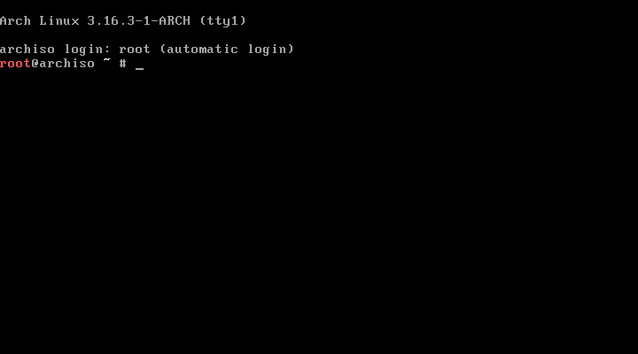

Arch Linux
Welcome to our Arch Linux page now Arch Linux on there home page at
archlinux.org they call them self "A simple, lightweight
distribution" now there used of the word simple do not mean easy to use. To use ArchLinux you should read there
philosophy know as
The Arch Way witch follow five core
principles commonly referred to as the Arch Way, or the Arch Philosophy otherwise can be summarized by KISS for Keep It
Simple, Stupid.
Simplicity
Simplicity is the ultimate sophistication. — Leonardo da Vinci
Simplicity is absolutely the principal objective behind Arch development. Many GNU/Linux distributions define
themselves as "simple." However, simplicity itself has many definitions.
Arch Linux defines simplicity as without unnecessary additions, modifications, or complications, and provides a
lightweight UNIX-like base structure that allows an individual user to shape the system according to their own needs. In
short: an elegant, minimalist approach.
A lightweight base structure built with high programming standards will tend to have lower system resource demands. The
base system is devoid of all clutter that may obscure important parts of the system, or make access to them difficult or
convoluted. It has a streamlined set of succinctly commented, clean configuration files that are arranged for quick access
and editing, with no cumbersome graphical configuration tools to hide possibilities from the user. An Arch Linux system is
therefore readily configurable to the very last detail.
Complexity without complication.
Arch Linux retains the inherent complexities of a GNU/Linux system, while keeping them well organized and transparent.
Arch Linux developers and users believe that trying to hide the complexities of a system actually results in an even more
complex system, and is therefore to be avoided.
Code-correctness over convenience
Correctness is clearly the prime quality. If a system does not do what it is supposed to do, then everything else about it
matters little. — Bertrand Meyer
The Arch Linux system places precedence upon elegance of design as well as clean, correct, simple code, rather than
unnecessary patching, automation, eye candy or "newbie-friendliness." Software patches are therefore kept to an
absolute minimum; ideally, never. Simple design and implementation shall always trump simple user interface.
Simplicity of implementation, code-elegance, and minimalism shall always remain the reigning priorities of Arch
development.
Concepts, designs and features are generated and implemented by using the Arch Way principles as a guide, rather than
bowing to external influences. The development team are resolute in their commitment and dedication to the Arch Way
philosophy. If you share their vision, you are welcomed and encouraged to use Arch.
User-centric
Whereas many GNU/Linux distributions attempt to be more user-friendly, Arch Linux has always been, and
shall always remain user-centric.
Arch Linux targets and accommodates competent GNU/Linux users by giving them complete control and responsibility over the
system.
Arch Linux users fully manage the system on their own. The system itself will offer little assistance, except for a
simple set of maintenance tools that are designed to perfectly relay the user's commands to the system. Arch developers
do not expend energy re-inventing GUI system tools; Arch is founded upon sensible design and excellent documentation.
This user-centric design necessarily implies a certain "do-it-yourself" approach to using the Arch
distribution. Rather than pursuing assistance or requesting a new feature to be implemented by developers, Arch Linux users
have a tendency to solve problems themselves and generously share the results with the community and development team – a
"do first, then ask" philosophy. This is especially true for user-contributed packages found in the Arch User
Repository – the official Arch Linux repository for community-maintained packages.
Openness
Openness goes hand in hand with simplicity, and is also one of the guiding principles of Arch Linux
development.
Arch Linux uses simple tools, that are selected or built with openness of the sources and their output in mind.
Openness removes all boundaries and abstraction between the user and the system, providing more control, while
simultaneously simplifying system maintenance.
The open nature of Arch Linux also implies a fairly steep learning curve, but experienced Arch Linux users tend to find
other more closed systems much more inconvenient to control.
The openness principle extends to its community members as well, as Arch Linux users are very open with assistance and
contribution.
Freedom
Another guiding principle of Arch Linux development is freedom. Users are not only permitted to make all
decisions concerning system configuration, but also choose what their system will be.
By keeping the system simple, Arch Linux provides the freedom to make any choice about the system.
A freshly installed Arch Linux system contains only basic core components with no automatic configuration performed.
Users are able to configure the system as they wish, from the shell. From the start of the installation procedure, every
component of the system is 100% transparent and accessible for instant access, removal, or replacement by alternative
components.
The large number of packages and build scripts in the various Arch Linux repositories also support freedom of choice,
offering free and open source software for those who prefer it, as well as proprietary software packages, for those who
embrace functionality over ideology. It is the user who chooses.
As Judd Vinet, the founder of the Arch Linux project said: "[Arch Linux] is what you make
it."
Now by default archlinux look like this, and that the beauty of Arch Linux you can make Arch Linux look however you what it to look,
you control everything about it, from what Desktop environments you use to what application start on boot up, to everything you do.
